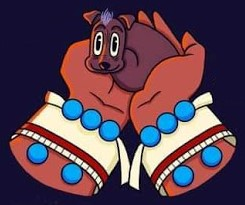
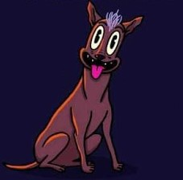

LA LEYENDA AZTECA DEL PERRO MEXICANO
1 Xolotl creo al Xolo de una
astilla del hueso de la vida.

2 Xolo contaba con todo
para proteger al hombre.

3 Al morir el hombre, xolo
tenia una mision clara....
4 ....transitar con el hacia
el inframundo.